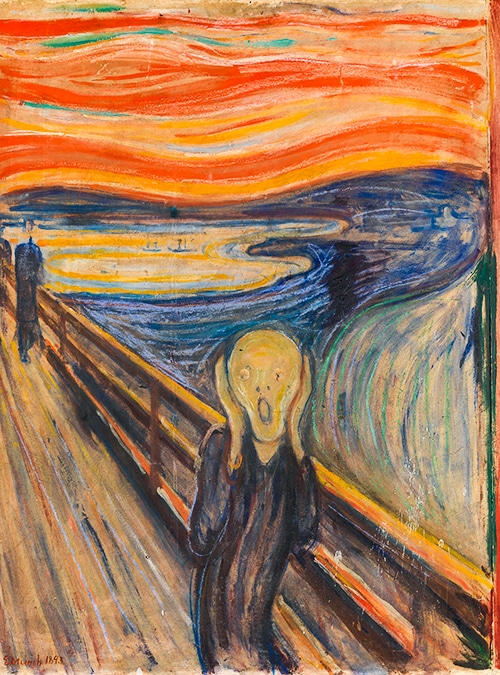
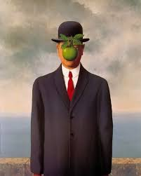
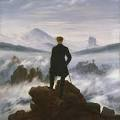
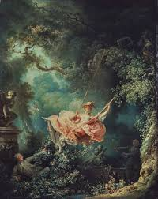
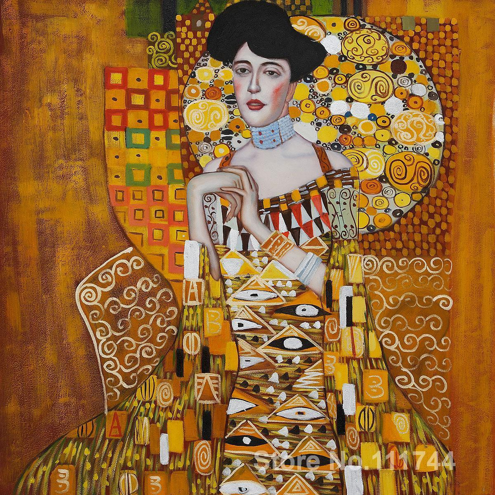
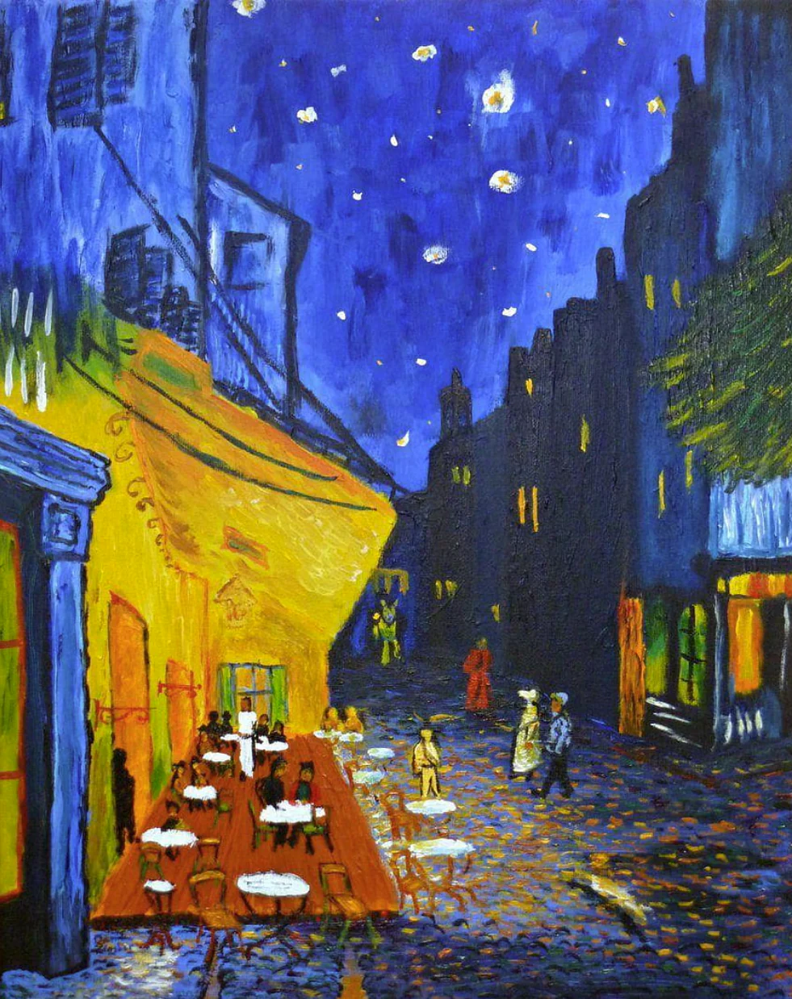
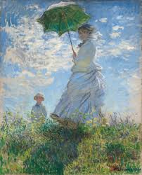

The Starry Night
Dreamlike night with swirling stars

Girl with a Pearl Earring
Quiet expression, timeless pearl glow

The Scream
Silent figure overwhelmed by existential terror

The Son of Man
Truth hides behind the surface

Wanderer above the Sea of Fog
Solitude facing vast unknown nature

The Persistence of Memory
Time loses meaning in dreams

The Swing
Carefree pleasure hidden beneath innocence

Mona Lisa
Mystery behind a subtle smile

Portretul Adelei Bloch-Bauer I
Luxury, identity, and golden elegance

Café Terrace at Night
Warm light in night life

Woman with a Parasol
Family moment in moving light